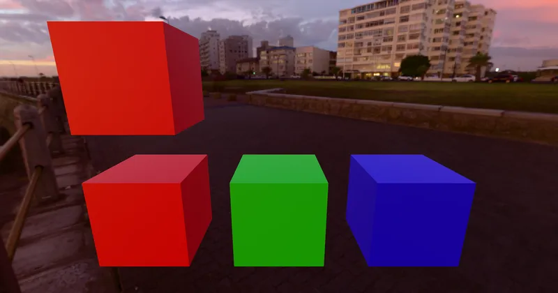

GLTF GLTF Extensions KHR_animation_pointer
Animated Colors Cube - RedGPU WebGPU Example
Loads Khronos AnimatedColorsCube to verify baseColorFactor color interpolation pointer animation.
Khronos 공식 AnimatedColorsCube 모델로 baseColorFactor 색상 보간 포인터 애니메이션을 검증합니다.
